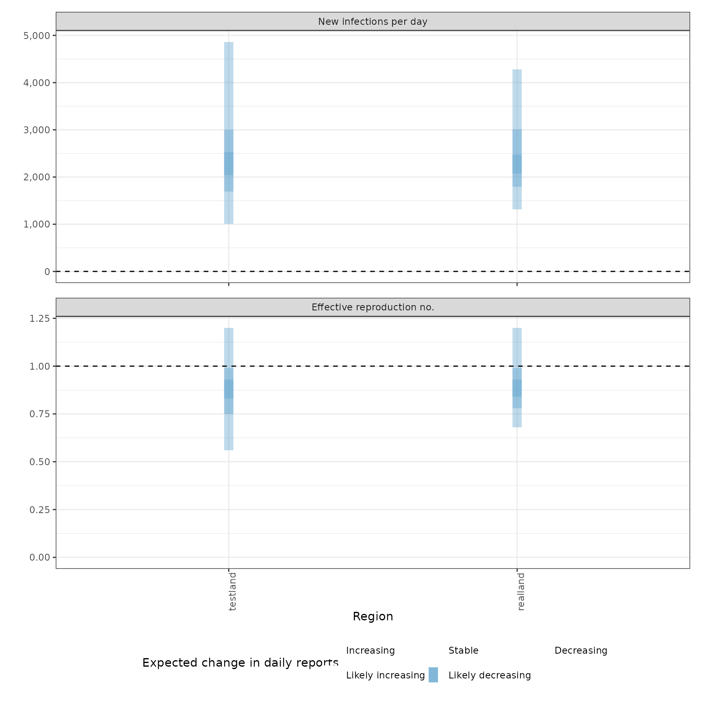
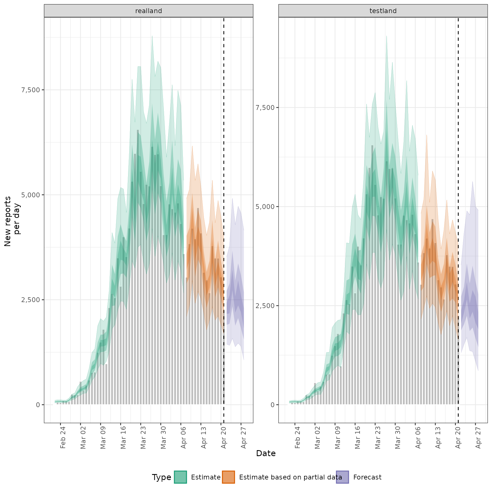
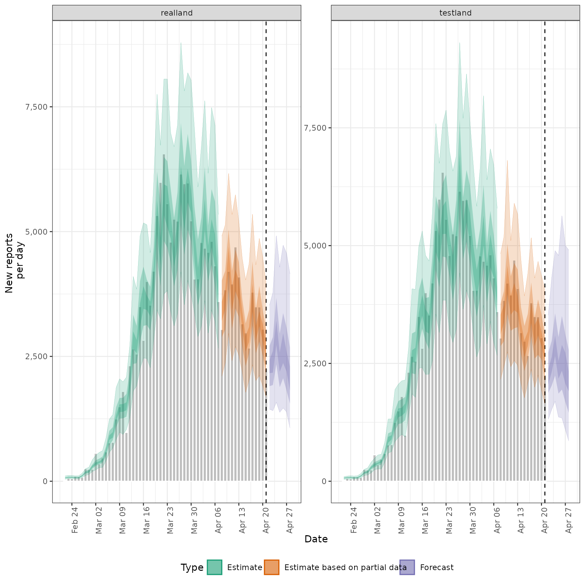
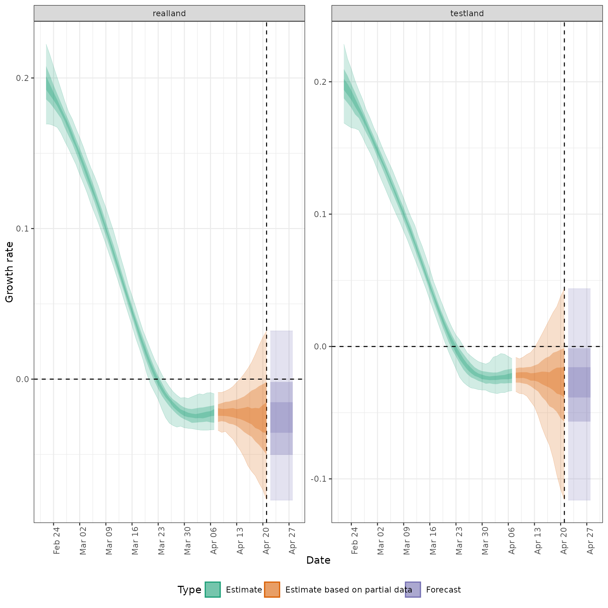
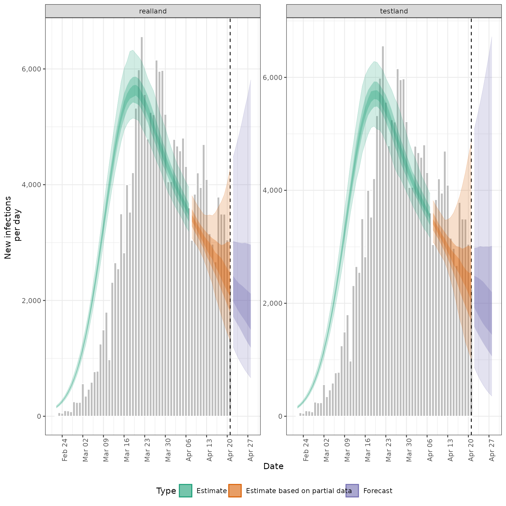
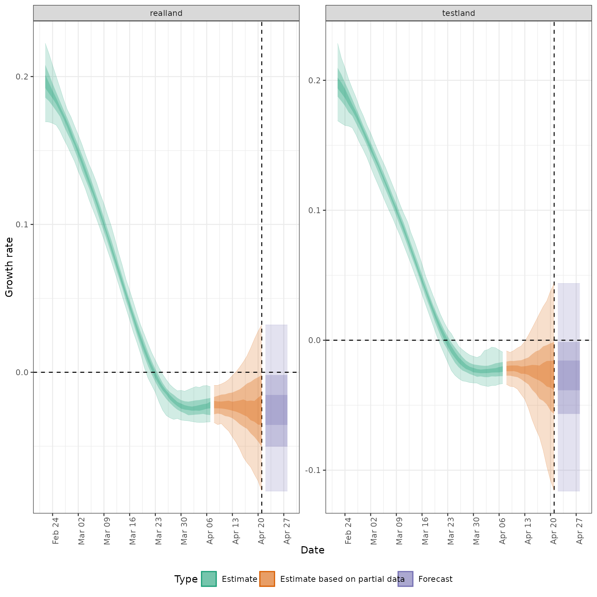
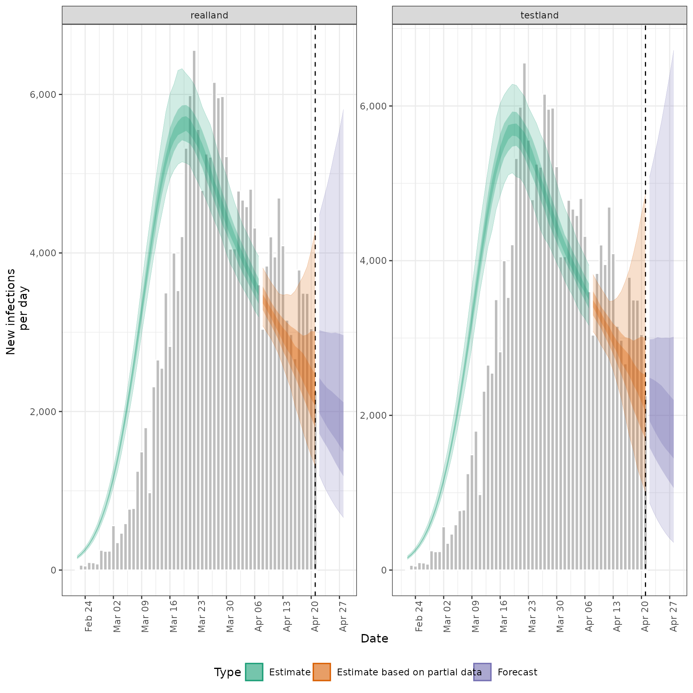
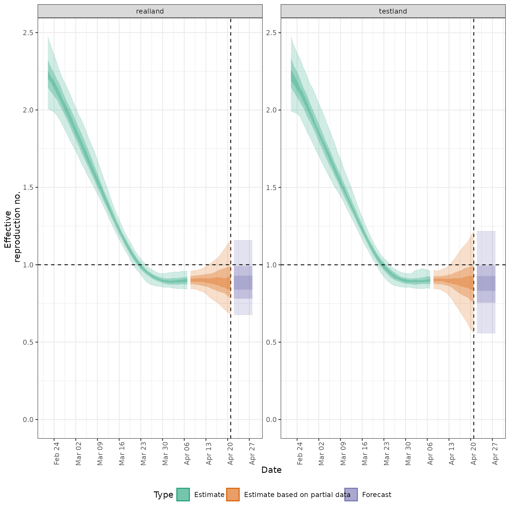
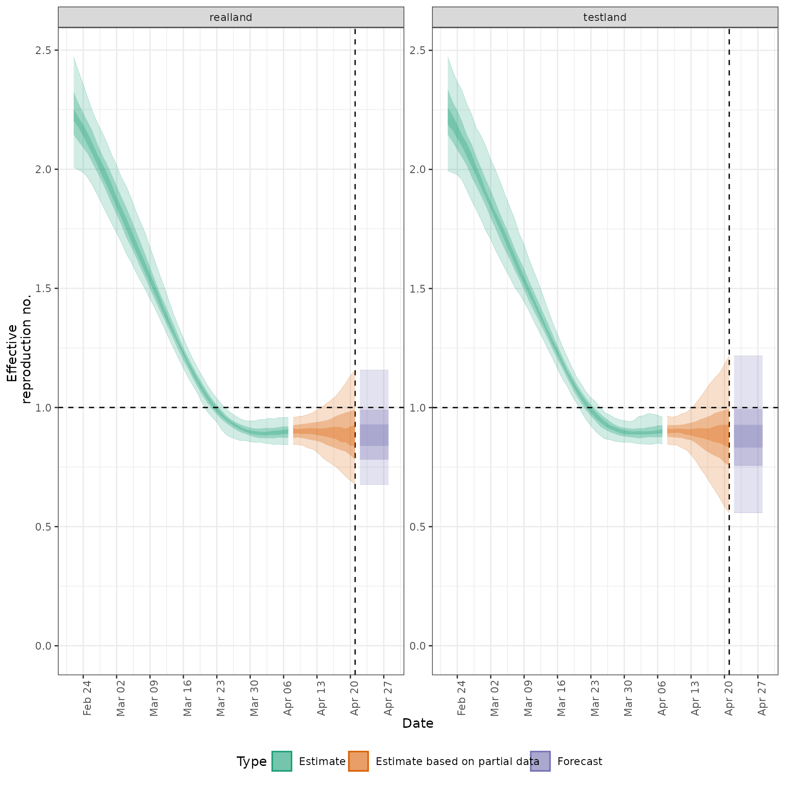

Usage
regional_summary(
regional_output = NULL,
data,
results_dir = NULL,
summary_dir = NULL,
target_date = NULL,
region_scale = "Region",
all_regions = TRUE,
return_output = is.null(summary_dir),
plot = TRUE,
max_plot = 10,
...
)Arguments
- regional_output
A list of output as produced by
regional_epinow()and stored in theregionallist.- data
A
<data.frame>of confirmed cases (confirm) by date (date), and region (region).- results_dir
An optional character string indicating the location of the results directory to extract results from.
- summary_dir
A character string giving the directory in which to store summary of results.
- target_date
A character string giving the target date for which to extract results (in the format "yyyy-mm-dd"). Defaults to latest available estimates.
- region_scale
A character string indicating the name to give the regions being summarised.
- all_regions
Logical, defaults to
TRUE. Should summary plots for all regions be returned rather than just regions of interest.- return_output
Logical, defaults to FALSE. Should output be returned, this automatically updates to TRUE if no directory for saving is specified.
- plot
Logical, defaults to
TRUE. Should regional summary plots be produced.- max_plot
Numeric, defaults to 10. A multiplicative upper bound on the\ number of cases shown on the plot. Based on the maximum number of reported cases.
- ...
Additional arguments passed to
report_plots.
Examples
# get example output from regional_epinow model
regional_out <- readRDS(system.file(
package = "EpiNow2", "extdata", "example_regional_epinow.rds"
))
regional_summary(
regional_output = regional_out$regional,
data = regional_out$summary$reported_cases
)
#> INFO [2024-11-20 21:47:55] No summary directory specified so returning summary output
#> $latest_date
#> [1] "2020-04-21"
#>
#> $results
#> $results$estimates
#> $results$estimates$summarised
#> Indices: <variable>, <region>
#> region date variable strat type median
#> <char> <Date> <char> <char> <char> <num>
#> 1: testland 2020-02-22 R <NA> estimate 2.2278552
#> 2: testland 2020-02-23 R <NA> estimate 2.1956881
#> 3: testland 2020-02-24 R <NA> estimate 2.1658534
#> 4: testland 2020-02-25 R <NA> estimate 2.1167783
#> 5: testland 2020-02-26 R <NA> estimate 2.0750111
#> ---
#> 718: realland 2020-04-25 reported_cases <NA> forecast 2392.0000000
#> 719: realland 2020-04-26 reported_cases <NA> forecast 2657.0000000
#> 720: realland 2020-04-27 reported_cases <NA> forecast 2412.5000000
#> 721: realland 2020-04-28 reported_cases <NA> forecast 2025.5000000
#> 722: realland <NA> reporting_overdispersion <NA> <NA> 0.2082416
#> mean sd lower_90 lower_50 lower_20
#> <num> <num> <num> <num> <num>
#> 1: 2.2339314 1.520613e-01 1.9943896 2.1464357 2.1888984
#> 2: 2.2011751 1.357974e-01 1.9860490 2.1151418 2.1641639
#> 3: 2.1650775 1.237701e-01 1.9774416 2.0817767 2.1299238
#> 4: 2.1259816 1.150807e-01 1.9554507 2.0493088 2.0959586
#> 5: 2.0843620 1.089560e-01 1.9123583 2.0157564 2.0533034
#> ---
#> 718: 2538.4700000 9.170918e+02 1380.5500000 1883.0000000 2192.8000000
#> 719: 2805.4900000 1.027315e+03 1467.6500000 2063.5000000 2367.0000000
#> 720: 2584.9950000 1.005459e+03 1390.7000000 1817.7500000 2199.0000000
#> 721: 2267.9850000 1.045847e+03 1066.6000000 1551.0000000 1815.6000000
#> 722: 0.2087912 2.905009e-02 0.1668448 0.1873106 0.1996848
#> upper_20 upper_50 upper_90
#> <num> <num> <num>
#> 1: 2.2601529 2.337053 2.4724029
#> 2: 2.2281404 2.285346 2.4141443
#> 3: 2.1870962 2.248191 2.3675851
#> 4: 2.1441887 2.201463 2.3298029
#> 5: 2.1097129 2.146446 2.2739541
#> ---
#> 718: 2579.2000000 2956.250000 4287.1500000
#> 719: 2963.6000000 3368.250000 4727.5500000
#> 720: 2598.4000000 3079.500000 4566.6000000
#> 721: 2299.2000000 2681.500000 4154.3500000
#> 722: 0.2134048 0.225157 0.2606142
#>
#>
#>
#> $summarised_results
#> $summarised_results$table
#> Region New infections per day Expected change in daily reports
#> <char> <char> <fctr>
#> 1: realland 2256 (1316 -- 4280) Likely decreasing
#> 2: testland 2265 (1009 -- 4859) Likely decreasing
#> Effective reproduction no. Rate of growth
#> <char> <char>
#> 1: 0.89 (0.68 -- 1.2) -0.026 (-0.08 -- 0.032)
#> 2: 0.86 (0.56 -- 1.2) -0.03 (-0.12 -- 0.044)
#> Doubling/halving time (days)
#> <char>
#> 1: -27 (22 -- -8.6)
#> 2: -23 (16 -- -6)
#>
#> $summarised_results$data
#> region estimate median mean sd lower_90 lower_50
#> <fctr> <char> <num> <num> <num> <num> <num>
#> 1: testland 2265 (1009 -- 4859) 2265.00 2533.00 1474.00 1009.00 1693.00
#> 2: realland 2256 (1316 -- 4280) 2256.00 2445.00 900.00 1316.00 1795.00
#> 3: realland 0.89 (0.68 -- 1.2) 0.89 0.89 0.15 0.68 0.78
#> 4: testland 0.86 (0.56 -- 1.2) 0.86 0.89 0.22 0.56 0.75
#> lower_20 upper_20 upper_50 upper_90 metric
#> <num> <num> <num> <num> <fctr>
#> 1: 2038.00 2527.00 2999.00 4859.0 New infections per day
#> 2: 2074.00 2474.00 3010.00 4280.0 New infections per day
#> 3: 0.84 0.93 0.99 1.2 Effective reproduction no.
#> 4: 0.83 0.93 0.99 1.2 Effective reproduction no.
#> Expected change in daily reports prob_control
#> <fctr> <list>
#> 1: Likely decreasing 0.76
#> 2: Likely decreasing 0.78
#> 3: Likely decreasing 0.78
#> 4: Likely decreasing 0.76
#>
#> $summarised_results$regions_by_inc
#> [1] "testland" "realland"
#>
#>
#> $summary_plot

#>
#> $summarised_measures
#> $summarised_measures$rt
#> region date strat type median mean sd
#> <char> <Date> <char> <char> <num> <num> <num>
#> 1: realland 2020-02-22 <NA> estimate 2.2213878 2.2347746 0.14365298
#> 2: realland 2020-02-23 <NA> estimate 2.1951619 2.2005588 0.12502097
#> 3: realland 2020-02-24 <NA> estimate 2.1595587 2.1642923 0.11035496
#> 4: realland 2020-02-25 <NA> estimate 2.1184630 2.1261311 0.09991759
#> 5: realland 2020-02-26 <NA> estimate 2.0795528 2.0862831 0.09366188
#> ---
#> 130: testland 2020-04-24 <NA> forecast 0.8638174 0.8891564 0.21693035
#> 131: testland 2020-04-25 <NA> forecast 0.8638174 0.8891564 0.21693035
#> 132: testland 2020-04-26 <NA> forecast 0.8638174 0.8891564 0.21693035
#> 133: testland 2020-04-27 <NA> forecast 0.8638174 0.8891564 0.21693035
#> 134: testland 2020-04-28 <NA> forecast 0.8638174 0.8891564 0.21693035
#> lower_90 lower_50 lower_20 upper_20 upper_50 upper_90
#> <num> <num> <num> <num> <num> <num>
#> 1: 2.0080394 2.1445312 2.2035322 2.2520485 2.3249809 2.471421
#> 2: 1.9973309 2.1164082 2.1756078 2.2170764 2.2774939 2.411933
#> 3: 1.9869852 2.0906040 2.1394286 2.1866339 2.2370087 2.355639
#> 4: 1.9632718 2.0626986 2.0985240 2.1487508 2.1970850 2.297410
#> 5: 1.9299430 2.0225981 2.0592937 2.1069238 2.1581354 2.239102
#> ---
#> 130: 0.5580703 0.7549769 0.8317801 0.9277327 0.9941752 1.216937
#> 131: 0.5580703 0.7549769 0.8317801 0.9277327 0.9941752 1.216937
#> 132: 0.5580703 0.7549769 0.8317801 0.9277327 0.9941752 1.216937
#> 133: 0.5580703 0.7549769 0.8317801 0.9277327 0.9941752 1.216937
#> 134: 0.5580703 0.7549769 0.8317801 0.9277327 0.9941752 1.216937
#>
#> $summarised_measures$growth_rate
#> region date strat type median mean sd
#> <char> <Date> <char> <char> <num> <num> <num>
#> 1: realland 2020-02-22 <NA> estimate 0.19670713 0.19702298 0.017475793
#> 2: realland 2020-02-23 <NA> estimate 0.19230966 0.19276038 0.014831612
#> 3: realland 2020-02-24 <NA> estimate 0.18799783 0.18816206 0.012477542
#> 4: realland 2020-02-25 <NA> estimate 0.18323593 0.18324342 0.010475454
#> 5: realland 2020-02-26 <NA> estimate 0.17873129 0.17802654 0.008920428
#> ---
#> 130: testland 2020-04-24 <NA> forecast -0.03025107 -0.02883813 0.049137326
#> 131: testland 2020-04-25 <NA> forecast -0.03025107 -0.02883813 0.049137326
#> 132: testland 2020-04-26 <NA> forecast -0.03025107 -0.02883813 0.049137326
#> 133: testland 2020-04-27 <NA> forecast -0.03025107 -0.02883813 0.049137326
#> 134: testland 2020-04-28 <NA> forecast -0.03025107 -0.02883813 0.049137326
#> lower_90 lower_50 lower_20 upper_20 upper_50 upper_90
#> <num> <num> <num> <num> <num> <num>
#> 1: 0.1694198 0.18579690 0.19230266 0.20128757 0.207962621 0.22250668
#> 2: 0.1692765 0.18344874 0.18869314 0.19592401 0.201936144 0.21559405
#> 3: 0.1684119 0.18020399 0.18525607 0.19048171 0.195396700 0.20757162
#> 4: 0.1671651 0.17672138 0.18139445 0.18545255 0.189353977 0.20004153
#> 5: 0.1632953 0.17304201 0.17649287 0.17987361 0.183476456 0.19240871
#> ---
#> 130: -0.1160769 -0.05673017 -0.03851555 -0.01561591 -0.001308497 0.04368505
#> 131: -0.1160769 -0.05673017 -0.03851555 -0.01561591 -0.001308497 0.04368505
#> 132: -0.1160769 -0.05673017 -0.03851555 -0.01561591 -0.001308497 0.04368505
#> 133: -0.1160769 -0.05673017 -0.03851555 -0.01561591 -0.001308497 0.04368505
#> 134: -0.1160769 -0.05673017 -0.03851555 -0.01561591 -0.001308497 0.04368505
#>
#> $summarised_measures$cases_by_infection
#> region date strat type median mean sd lower_90 lower_50
#> <char> <Date> <char> <char> <num> <num> <num> <num> <num>
#> 1: realland 2020-02-22 <NA> estimate 157.9 158.1 12.1 140.1 149.9
#> 2: realland 2020-02-23 <NA> estimate 200.7 200.8 14.4 178.2 190.6
#> 3: realland 2020-02-24 <NA> estimate 256.9 256.5 17.9 227.6 243.9
#> 4: realland 2020-02-25 <NA> estimate 325.7 326.4 22.6 289.2 311.6
#> 5: realland 2020-02-26 <NA> estimate 410.6 412.5 28.4 364.3 393.4
#> ---
#> 130: testland 2020-04-24 <NA> forecast 2022.2 2575.0 2587.5 645.7 1388.8
#> 131: testland 2020-04-25 <NA> forecast 1942.8 2621.9 3158.8 554.9 1299.6
#> 132: testland 2020-04-26 <NA> forecast 1866.4 2689.1 3878.7 476.5 1216.3
#> 133: testland 2020-04-27 <NA> forecast 1797.2 2780.0 4788.5 408.9 1136.0
#> 134: testland 2020-04-28 <NA> forecast 1729.0 2898.9 5939.7 356.0 1060.1
#> lower_20 upper_20 upper_50 upper_90
#> <num> <num> <num> <num>
#> 1: 153.9 161.3 165.0 181.7
#> 2: 196.9 205.1 209.1 228.6
#> 3: 252.0 261.5 267.2 287.5
#> 4: 320.8 331.5 340.5 363.8
#> 5: 404.9 418.6 431.1 462.0
#> ---
#> 130: 1727.4 2425.3 3010.5 5543.2
#> 131: 1639.6 2383.3 3000.3 5805.5
#> 132: 1567.0 2319.7 3003.9 6095.3
#> 133: 1506.0 2257.6 3002.5 6400.0
#> 134: 1440.7 2197.0 3015.6 6720.4
#>
#> $summarised_measures$cases_by_report
#> region date strat type median mean sd lower_90 lower_50
#> <char> <Date> <char> <char> <num> <num> <num> <num> <num>
#> 1: realland 2020-02-22 <NA> estimate 66.5 68.2 18.9 39.0 56.0
#> 2: realland 2020-02-23 <NA> estimate 77.5 80.5 21.2 52.0 65.8
#> 3: realland 2020-02-24 <NA> estimate 75.0 78.4 20.8 47.0 64.0
#> 4: realland 2020-02-25 <NA> estimate 75.0 76.4 20.0 46.0 63.0
#> 5: realland 2020-02-26 <NA> estimate 76.0 76.3 20.7 44.9 62.0
#> ---
#> 130: testland 2020-04-24 <NA> forecast 2908.0 3025.3 1057.0 1696.5 2242.2
#> 131: testland 2020-04-25 <NA> forecast 2364.5 2618.8 1147.3 1362.3 1859.5
#> 132: testland 2020-04-26 <NA> forecast 2583.0 2920.1 1456.9 1341.3 1947.0
#> 133: testland 2020-04-27 <NA> forecast 2418.5 2703.5 1844.6 1098.5 1681.0
#> 134: testland 2020-04-28 <NA> forecast 2029.5 2523.7 2066.1 853.9 1451.2
#> lower_20 upper_20 upper_50 upper_90
#> <num> <num> <num> <num>
#> 1: 63.0 71.0 78.0 106.0
#> 2: 72.6 83.0 94.2 118.0
#> 3: 71.0 81.0 91.0 116.0
#> 4: 71.0 79.0 89.0 109.1
#> 5: 70.6 80.0 87.0 110.1
#> ---
#> 130: 2655.2 3095.2 3564.0 4892.2
#> 131: 2176.2 2551.8 3058.2 4790.4
#> 132: 2346.4 2891.8 3506.8 5633.9
#> 133: 2070.2 2727.8 3118.0 5002.1
#> 134: 1905.4 2331.8 2786.2 4905.3
#>
#>
#> $reported_cases
#> Index: <region>
#> date confirm region
#> <Date> <num> <char>
#> 1: 2020-02-22 14 testland
#> 2: 2020-02-23 62 testland
#> 3: 2020-02-24 53 testland
#> 4: 2020-02-25 97 testland
#> 5: 2020-02-26 93 testland
#> ---
#> 116: 2020-04-17 3786 realland
#> 117: 2020-04-18 3493 realland
#> 118: 2020-04-19 3491 realland
#> 119: 2020-04-20 3047 realland
#> 120: 2020-04-21 2256 realland
#>
#> $high_plots
#> $high_plots$infections
 #>
#> $high_plots$reports

#>
#> $high_plots$R
#>
#> $high_plots$reports

#>
#> $high_plots$R
 #>
#> $high_plots$growth_rate

#>
#>
#> $plots
#> $plots$infections

#>
#> $plots$reports
#>
#> $high_plots$growth_rate

#>
#>
#> $plots
#> $plots$infections

#>
#> $plots$reports
 #>
#> $plots$R

#>
#> $plots$growth_rate
#>
#> $plots$R

#>
#> $plots$growth_rate
 #>
#>
#>
#>